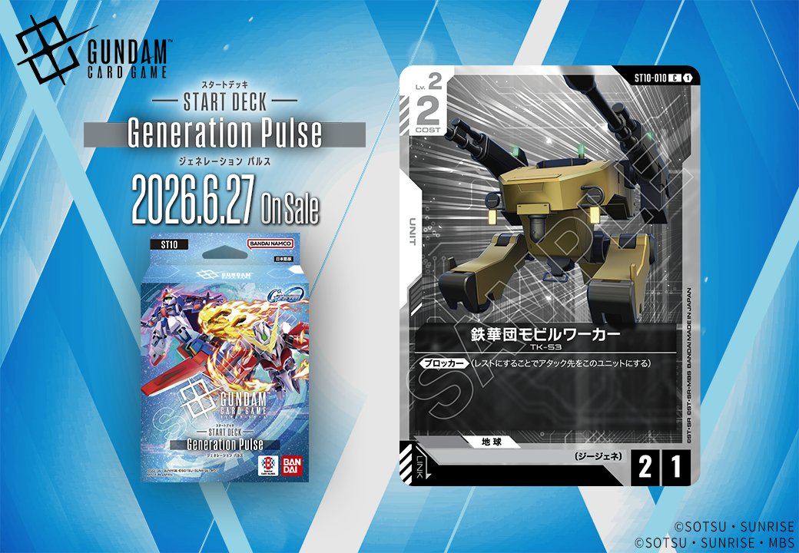

「Generation Pulse」より、BASE「ルーナ・マナ&キャリー・ベース」とUNIT「鉄華団モビルワーカー」の2枚が公開されました。青のBASEカードと白のUNITカードという組み合わせで、それぞれ異なる戦術的役割を担うカードとなっています。

ルーナ・マナ&キャリー・ベース (ST10-016)
| 色 | 青 | タイプ | BASE |
| Lv | 4 | コスト | 1 |
| AP | 0 | HP | 5 |
| 特徴 | 〔ジージェネ〕、〔艦船〕 | ||
効果: 【バースト】 このカードを配備する。【配備時】 自分のシールド1つを手札に加える。その後、〔ジージェネ〕の味方のユニットすべてを1回復する。
【配備時】効果でシールドを手札に戻しつつ〔ジージェネ〕ユニットを回復する、Generation Pulseの新規ベースカード。【バースト】により破壊されても即座に配備でき、シールド回収による手札補充と味方ユニットの回復を同時に行える防御的な性能を持つ。 〔ジージェネ〕特徴を活かした専用デッキでの運用が前提となるが、コスト1・HP5という軽量さは展開の助けになるだろう。

鉄華団モビルワーカー (ST10-010)
| 色 | 白 | タイプ | UNIT |
| Lv | 2 | コスト | 2 |
| AP | 2 | HP | 1 |
| 特徴 | 〔ジージェネ〕 | ||
効果: 《ブロッカー》(レストにすることでアタック先をこのユニットにする)
鉄華団モビルワーカーは、白色COST2で《ブロッカー》を持つ低コストユニットです。AP2/HP1と耐久力は低いものの、《ブロッカー》により味方の主力ユニットを守る壁役として機能します。 〔ジージェネ〕特徴を持つため、同じくGeneration Pulseで登場する【新カード】ハロや【新カード】開発経路図の解放との相性も期待でき、低コスト帯の防御的な選択肢として白色デッキの序盤を支える一枚となりそうです。


関連カード
-
 ホワイトベース(ST01-015)青系デッキ内採用率5% (60デッキ)
ホワイトベース(ST01-015)青系デッキ内採用率5% (60デッキ) -
 ネェル・アーガマ(GD01-123)青系デッキ内採用率0.8% (9デッキ)
ネェル・アーガマ(GD01-123)青系デッキ内採用率0.8% (9デッキ) -
 ジュピトリス(GD03-123)青系デッキ内採用率0.3% (4デッキ)
ジュピトリス(GD03-123)青系デッキ内採用率0.3% (4デッキ) -
 ハロ(EB01-017)NEW青系 — 同色・共通特徴: ジージェネ（新カード）
ハロ(EB01-017)NEW青系 — 同色・共通特徴: ジージェネ（新カード） -
 開発経路図の解放(ST10-014)NEW青系 — 同色・共通特徴: ジージェネ（新カード）
開発経路図の解放(ST10-014)NEW青系 — 同色・共通特徴: ジージェネ（新カード） -
 ユウ・カジマ(EB01-072)NEW白系 — 同色・共通特徴: ジージェネ（新カード）
ユウ・カジマ(EB01-072)NEW白系 — 同色・共通特徴: ジージェネ（新カード） -
 ブルーディスティニー1号機(EX)(EB01-043)NEW白系 — 同色・共通特徴: ジージェネ（新カード）
ブルーディスティニー1号機(EX)(EB01-043)NEW白系 — 同色・共通特徴: ジージェネ（新カード） -
 マーク・ギルダー(ST10-012)NEW白系 — 同色・共通特徴: ジージェネ（新カード）
マーク・ギルダー(ST10-012)NEW白系 — 同色・共通特徴: ジージェネ（新カード） -
 フェニックスガンダム (能力解放) (EX)(ST10-006)NEW白系 — 同色・共通特徴: ジージェネ（新カード）
フェニックスガンダム (能力解放) (EX)(ST10-006)NEW白系 — 同色・共通特徴: ジージェネ（新カード） -
 ティファ・アディール&フリーデン(EB01-090)NEW白系 — 同色・共通特徴: ジージェネ（新カード）
ティファ・アディール&フリーデン(EB01-090)NEW白系 — 同色・共通特徴: ジージェネ（新カード）